Инициация проекта: переосмысление и редизайн сайта посольства Республики Армения в РФ
Проблематика и основные цели проекта
- Основной целью проекта является решение проблемы неосведомленности граждан Армении в РФ касательно действующих законов, виз, регистрации, вопросов с получением армянского гражданства, вопросов, связанных с поступлением граждан Армении в Российские ВУЗы по квотным программам;
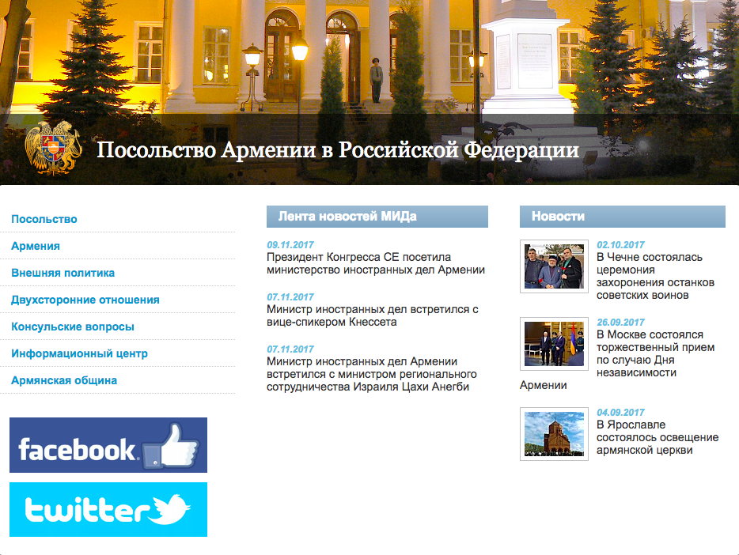
- Офлайн работает плохо, потому что работники просто не успевают уделить нужное количество времени каждому, в итоге люди разочаровываются и пишут вполне оправданные жесткие отзывы о работе персонала в Интернете;
- Сделав сайт наиболее удобным для пользователей путем редизайна, мы поможем крупнейшей институции снизить издержки и работать наиболее эффективно. Система будет отвечать на любые вопросы, перенося их из бесконечных офлайн звонков — в онлайн;
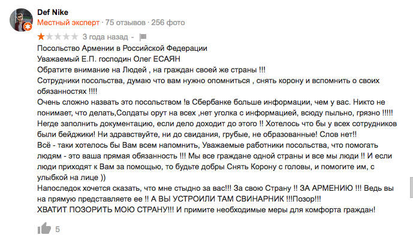
- Решим проблему очередей в консульский отдел, предоставив возможность заполнить необходимые документы онлайн и по средствам электронной очереди выбрать удобное время, для того чтобы забрать готовые документы. Соответственно, мобильное приложение позволит пользователю получить напоминалку в виде push-уведомления, а сайт — в виде e-mail рассылки;
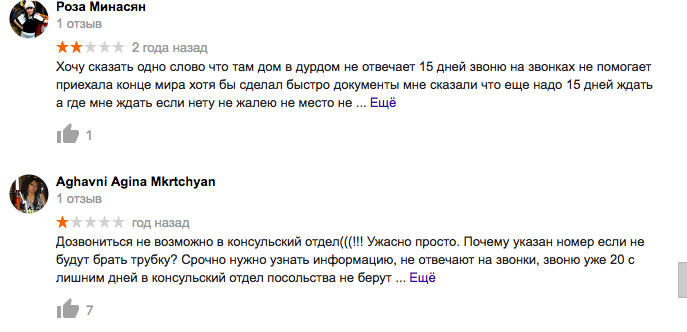
- Немаловажной является задача сплочения армянской диаспоры на территории РФ путем создания интерактивных календарей с мероприятиями в области культуры, бесплатного образования при Посольстве (например, Посольство предоставляет всем желающим возможность изучить армянский язык бесплатно с носителями языка, только об этом никто не знает, потому что информация в Сети отсутствует). Таких примеров много, в ходе работы я постараюсь найти решение большинству из них.
Целевая аудитория
- Граждане Армении на территории РФ, с консульскими вопросами;
- Граждане России (вероятнее всего тоже армяне), желающие получить гражданство или решить вопросы, связанные с документами на территории Республики Армения;
- Граждане стран, для которых действует визовая система при въезде в Ресупблику Армения;
- Армяне, которые хотят получить бесплатное образование (изучить язык, например, при посольстве);
- Гаждане Армении в России, которые попали в беду на территории чужого государства.
Конкурентная среда
Есть неформальная конкурентная среда – страны постсоветского пространства, с которыми Армения находится в сложных отношениях. Хороший сайт на фоне «конкурентов» – повышение имиджа страны зарубежом (в данном случае – в России)


Карандаш + бумага, айпад + палец
Из каких частей состоит проект?
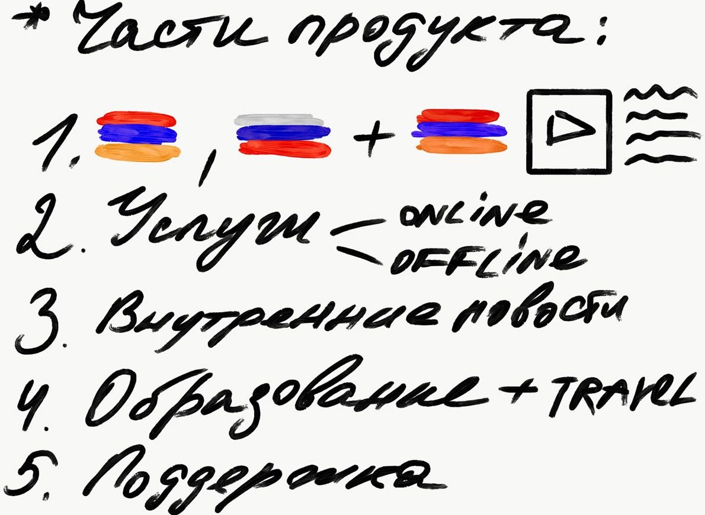
Основные остановки пользователя
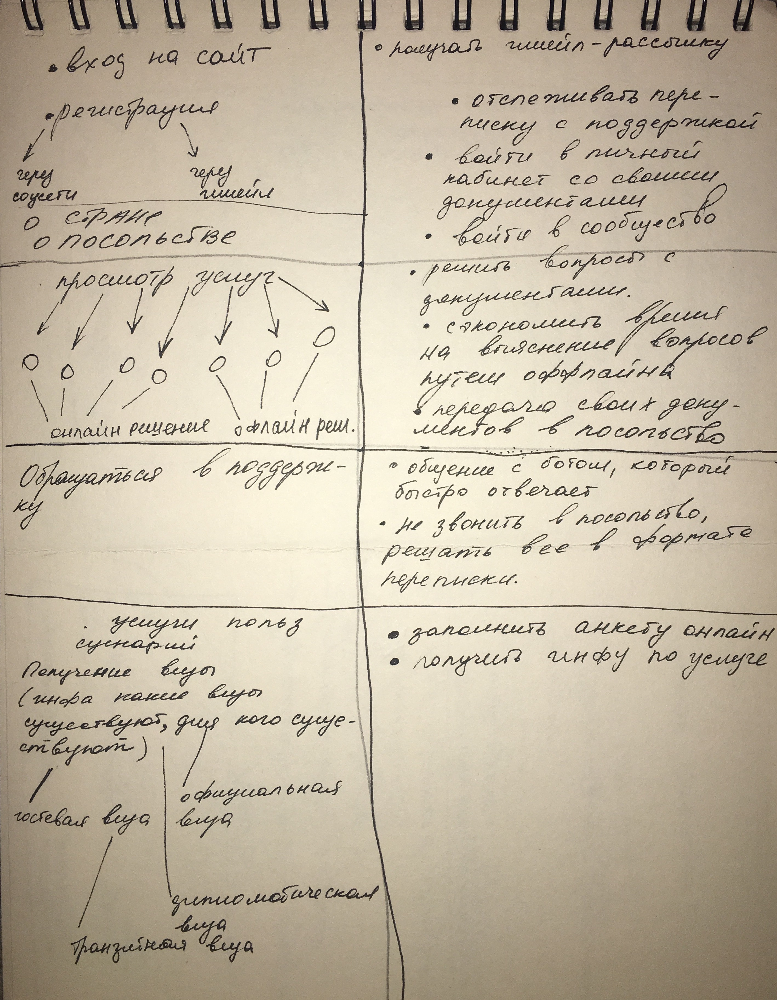
Информационная архитектура, блок-схемы
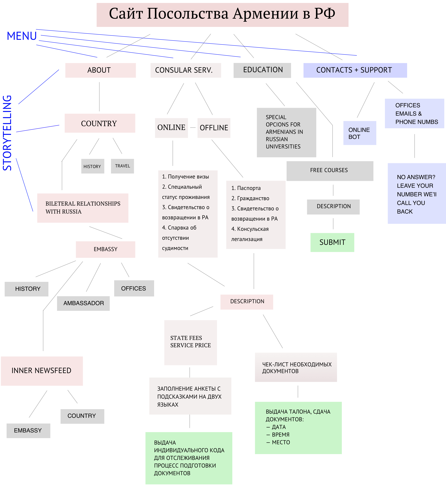
Разбор полетов: консульские услуги (онлайн-оффлайн)
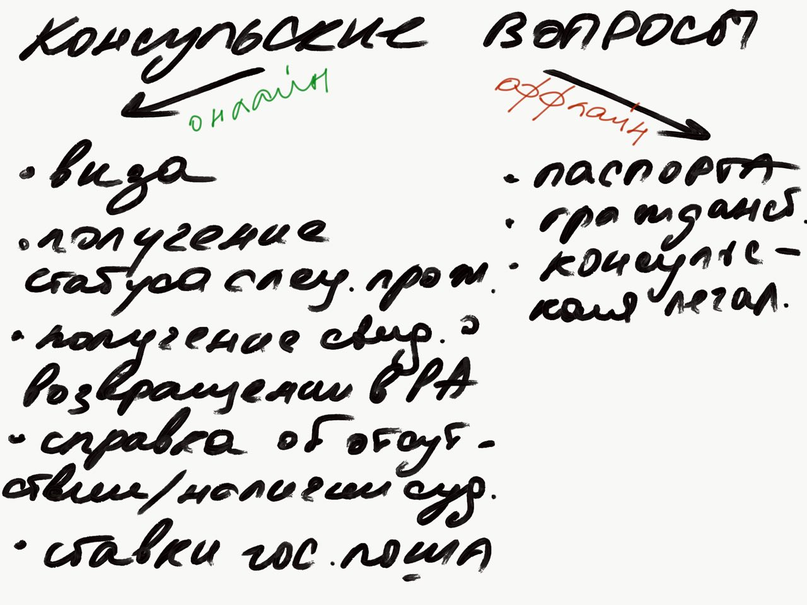
Пример заполнения анкеты в разделе консульских услуг
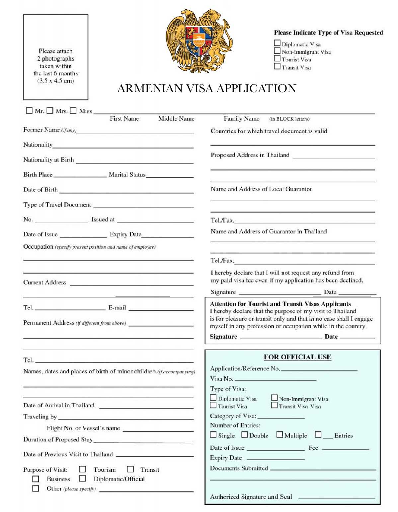
Пример подсказок при заполнении анкеты в разделе консульских услуг
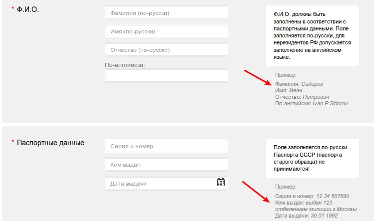
Скетч страницы с конкретной выбранной услугой
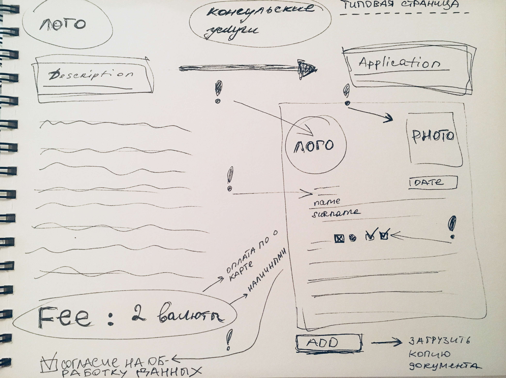
Основные ошибки пользователей и системы
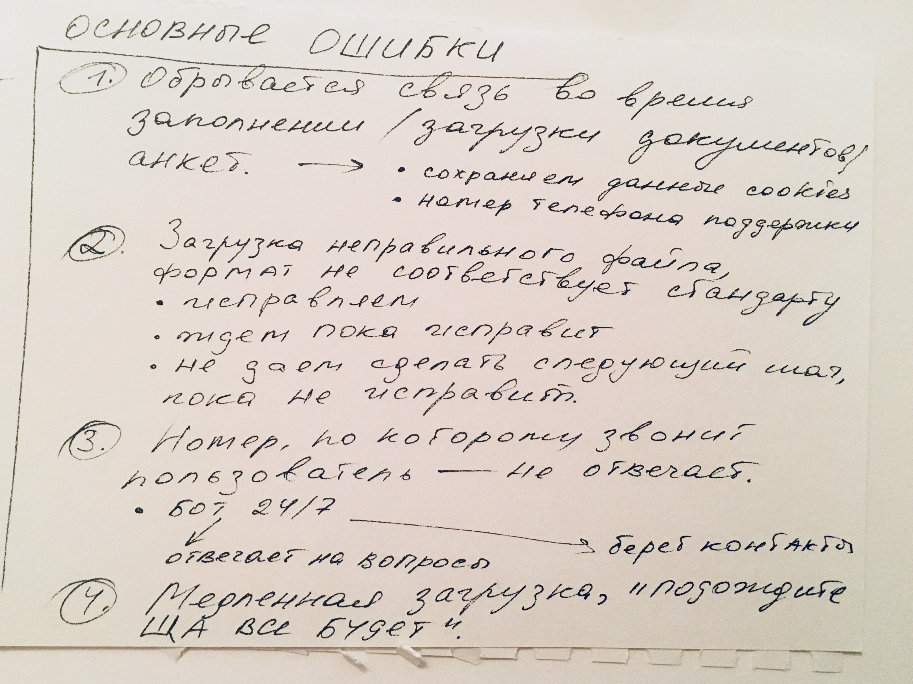
Референсы
Коротко о главном
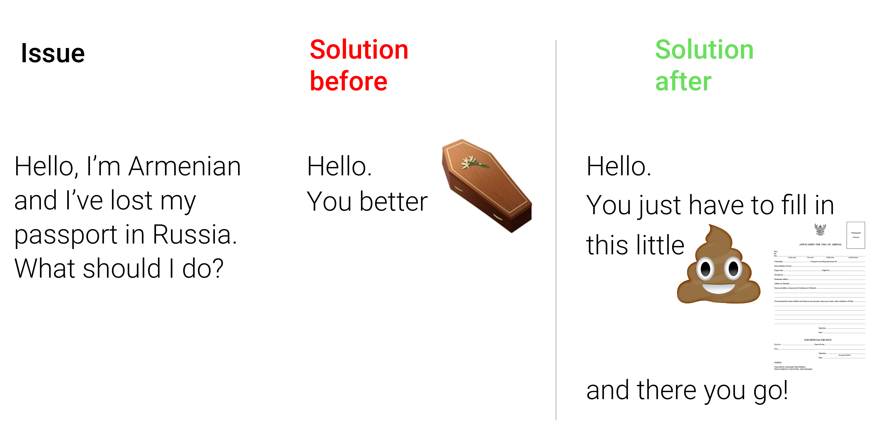